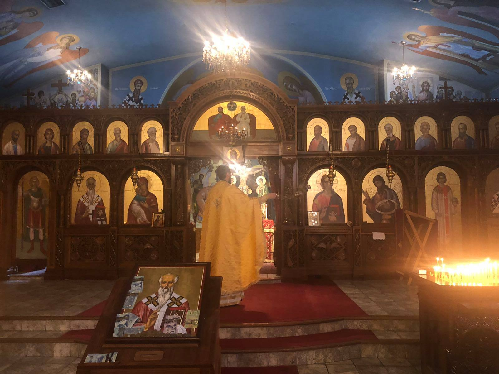

Недела на Страшниот суд.
Sunday of the Last Judgment.

После денешниот ден го отстрануваме месото од нашата исхрана, подготвувајќи се за Велигденскиот пост. Наредната недела во среда и во петок не се пости. Оваа седмица е позната како Сирна седмица или, пак, Бела седмица, бидејќи мрсното јадење се состои од млеко, млечни производи и јајца.
Starting from tomorrow we restrain from eating meat, preparing ourselves for the Great Lent. Following Wednesday and Friday we do not fast. This week is know as Cheesefare week (Sirna nedela) or White week (Bela nedela), because we consume just milk, cheese and eggs.